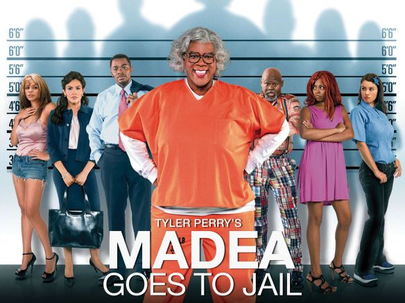

HOME
Catwoman
A shy woman, endowed with the speed, reflexes, and senses of a cat, walks a thin line between criminal and hero, even as a detective doggedly pursues her, fascinated by both of her personas. She discovers a conspiracy within the cosmetics company she works for that involves a dangerous product that could cause widespread health problems. After being discovered and murdered by the conspirators, Patience is revived by an Egyptian mau cat that grants her cat-like metahuman abilities, allowing her to become the crime-fighting superheroine Catwoman.

Company Credits: Warner Bros. Pictures
Release Date: July 23, 2004
Genres: Superhero, Action, Crime, Fantasy
Rating: PG-13
Running Time: 104 mins
Madea Goes to Jail
Madea Goes to Jail follows the sharp-tongued, fearless Madea as her temper finally lands her behind bars, where she strikes up an unlikely bond with a troubled young woman. Blending over-the-top comedy with dramatic themes of redemption, forgiveness, and second chances, the film delivers Tyler Perry’s trademark mix of outrageous antics and heartfelt life lessons.

Company Credits: Tyler Perry Studios
Release Date: February 20, 2009
Genres: Comedy, Crime, Drama
Rating: PG-13
Running Time: 103 mins